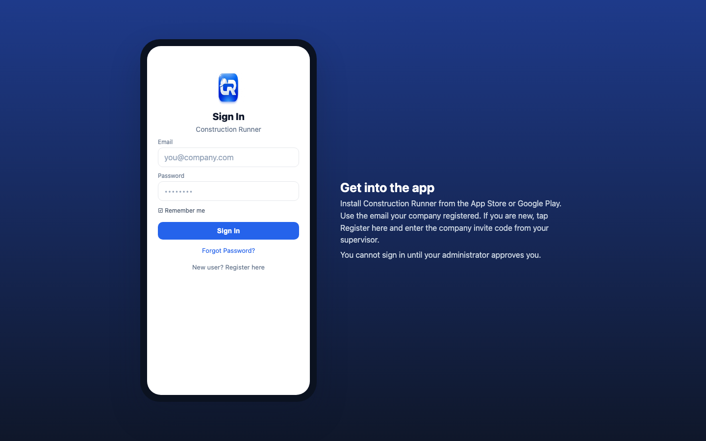
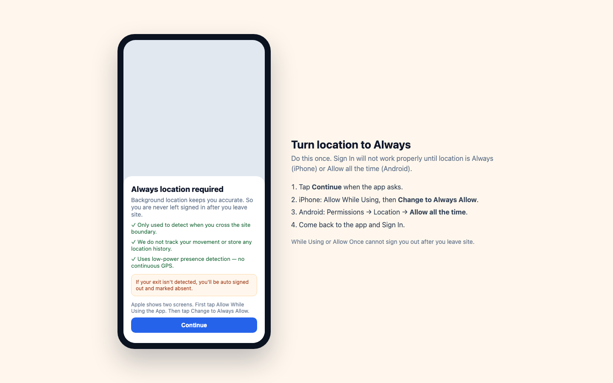
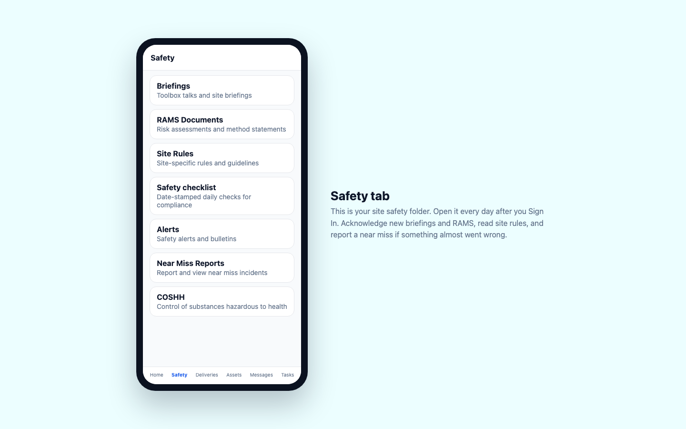
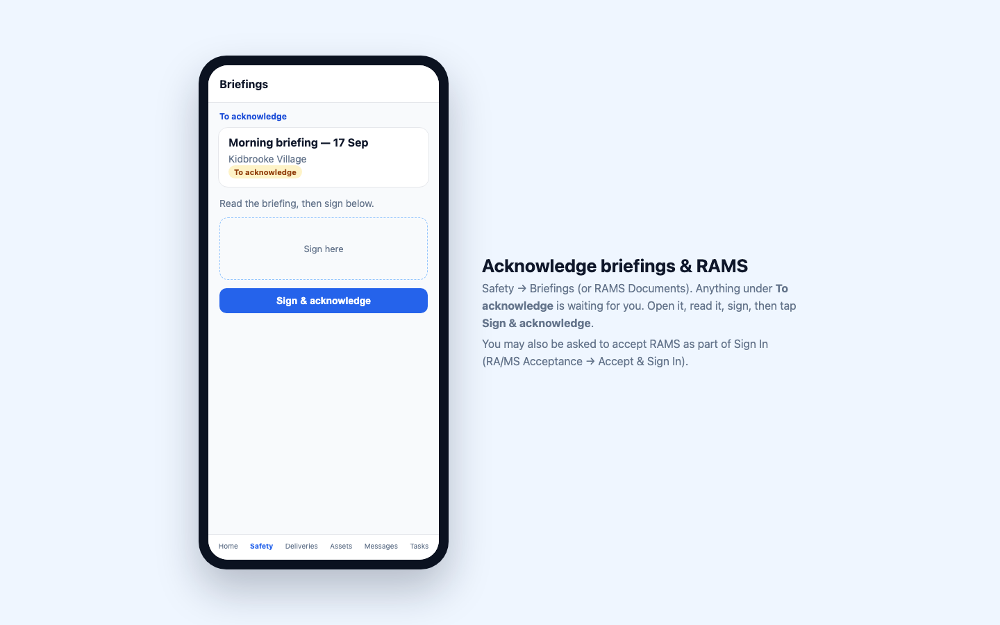
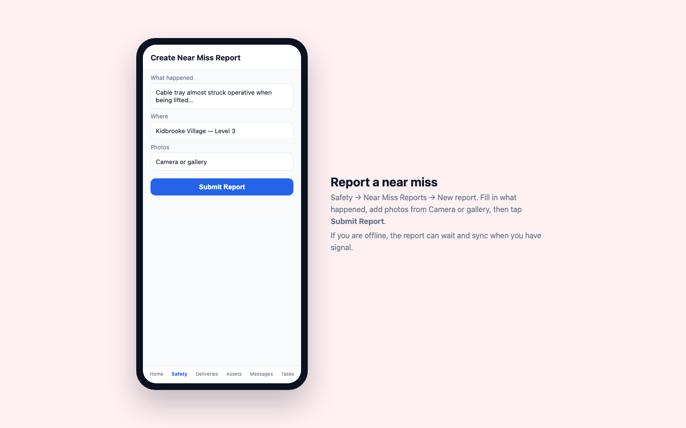
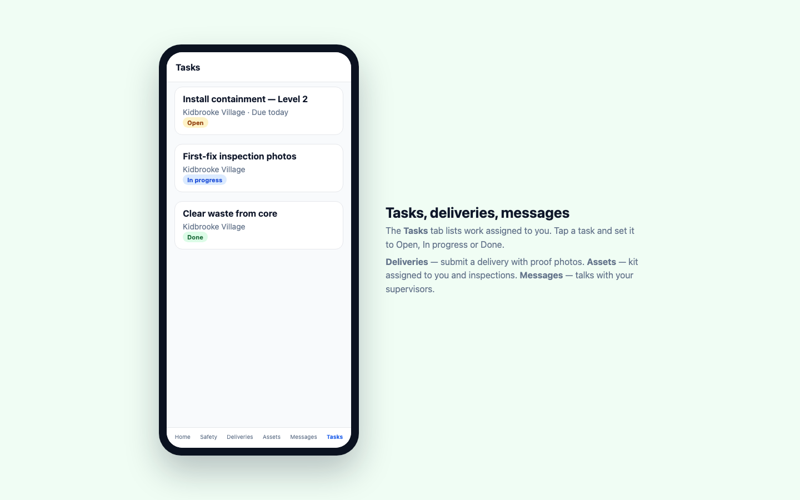
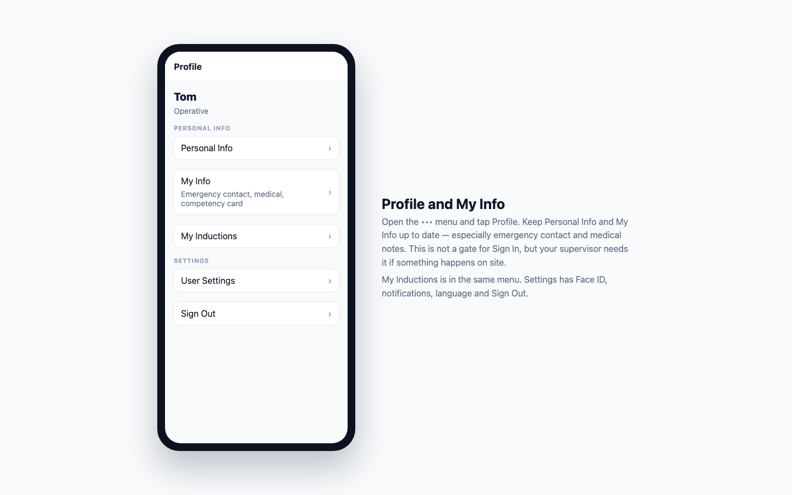

Your Construction Runner app
A simple guide for operatives and anyone who uses the phone app on site.
A simple guide for operatives and anyone who uses the phone app on site.
If you work on site, this is the app you use every day. You do not log in on the website — the Construction Runner app on your phone is where you sign in, complete induction, read RAMS and briefings, and finish your tasks.
Keep this on your phone or print it. Ask your supervisor if you get stuck.
First time on the app
Every day on site

Figure 1. Sign in to Construction Runner. Register here if you are new — you still need approval before you can use the app.
The app only uses location to know when you are inside the site and when you leave. It does not track you around town or keep a location history.
The first time you Check In, you will see Always location required (iPhone) or Allow all the time required (Android). Tap Continue.
| Phone | What to tap |
|---|---|
| iPhone | First: Allow While Using the App. Then: Change to Always Allow. In Settings → Construction Runner → Location, it must say Always. |
| Android | Settings → Permissions → Location → Allow all the time. |

Figure 2. Allow Always location so you are never left signed in after you leave site.
After you are in, you land on Home. Across the bottom you have six tabs:
Home · Safety · Deliveries · Assets · Messages · Tasks
The ••• menu (top right on most screens) has Profile, Settings, Help and Sign Out.
On Home you will see if you are Signed in, Signed out, or Absent today. Tap:

Figure 3. Home — start Check In / Out from here. (Illustrated layout; labels match the live app.)

Figure 4. Check In / Out. Stand inside the site boundary, then Sign In.
If you have no signal, Sign Out can wait and sync later. Do not stay “signed in” overnight if you have left site.
Need a day off the site? Use Mark as absent / Lock this day (this locks sign-in until midnight GMT).
Open ••• → Profile → My Inductions. This is how you start induction on a new site (for example if you move from one job to another).
Induction steps: Read site safety information → Acknowledge RAMS and risk assessments → Confirm you understand site rules → Complete induction.

Figure 5. My Inductions — start induction here for any company site.
Tap the Safety tab (hard-hat icon). Work through anything new:
| Open this | What you do |
|---|---|
| Briefings | Read toolbox talks under To acknowledge. Sign, then tap Sign & acknowledge. |
| RAMS Documents | Read risk assessments. Acknowledge the same way. You may also accept RAMS during Sign In. |
| Site Rules | Read PPE, emergency and conduct rules. You can Save as favourite. |
| Safety checklist | Complete today’s checks if your site uses them. |
| Alerts | Open new alerts — they are marked read when you open them. |
| Near Miss Reports | If something almost went wrong: New report → fill in → photos (Camera or gallery) → Submit Report. |
| COSHH | Look up hazardous substances and PPE. |

Figure 6. Safety tab — briefings, RAMS, rules, alerts and near miss.

Figure 7. Anything under To acknowledge is waiting for your signature.

Figure 8. Near miss — Submit Report. It can sync later if you have no signal.

Figure 9. Tasks — mark Open, In progress or Done.
••• → Profile

Figure 10. Profile — My Info and My Inductions live here.
If you are a supervisor you use the same Check In, Safety and Tasks. You also get Supervisor Tools on Home (a drawer) and you can add a task with the + button. Site lists follow the sites your Super Admin ticked for you.
| What you see | What to do |
|---|---|
| Pending approval / cannot Sign In after register | Ask your supervisor to approve you in Pending approvals. |
| Sign In stays locked / needs Always | iPhone: Location = Always. Android: Allow all the time. Then return to the app. |
| Outside Site Boundary | Walk onto the site. Refresh location. You cannot Sign In from outside the fence. |
| Asked to complete induction | Finish Site induction, or Profile → My Inductions → Start Induction. |
| Did not auto sign out | Location is probably still While Using. Change to Always, then Sign Out manually this time. |
| You're offline | Use Wi‑Fi or mobile data for Check In. Other items may sync when you have signal. |
| Forgot password | Forgot Password? on the sign-in screen. |
Need help? Ask your supervisor, or email info@construction-runner.com.